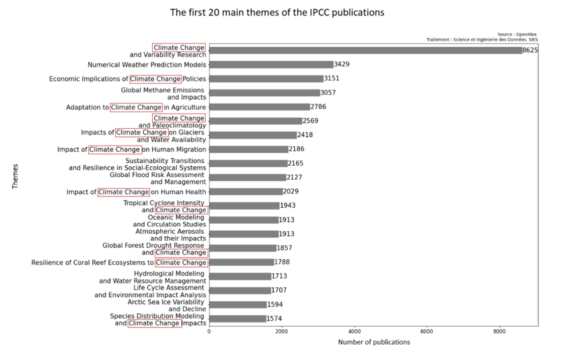
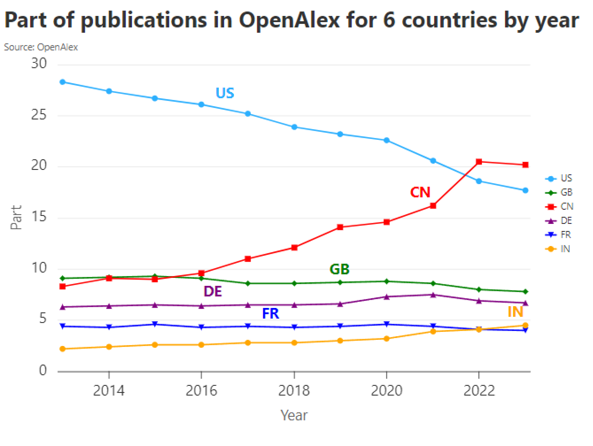
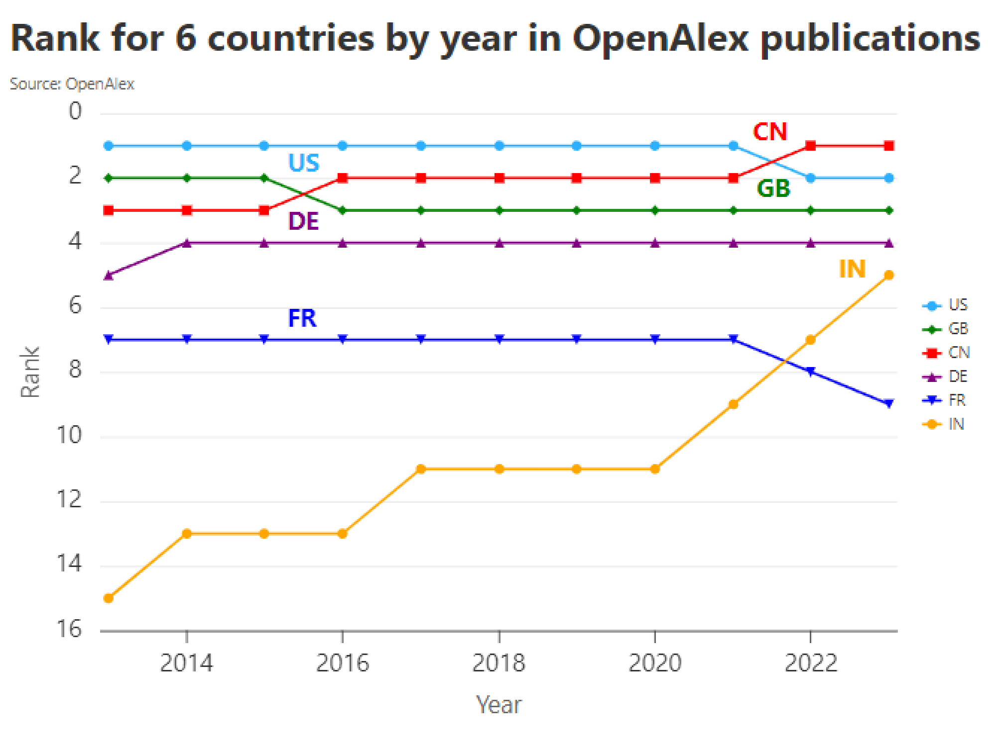
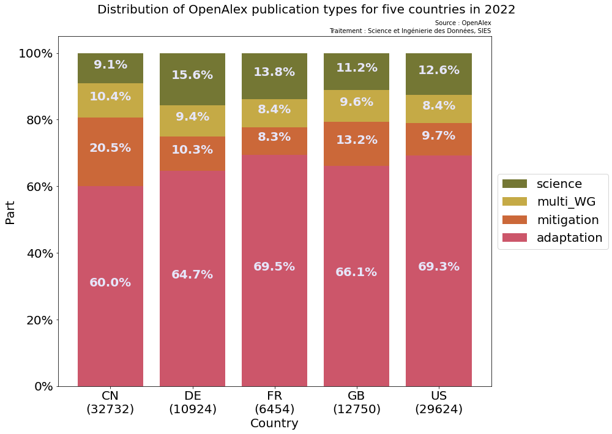

üå≥ üê¶ Transition √©cologique pour un d√©veloppement soutenable -
Modèle d'apprentissage
18 décembre 2024
AALLAT Hafsa
hafsa.aallat@recherche.gouv.fr
SIES - DISD
Mise en contexte
Lors de la première phase d'analyse, à partir des publications du
GIEC, nous avons :
➔ Ces données enrichies nous ont servi de base pour analyser les publications du GIEC, la présentation est disponible ici
- üßπ Collect√© et nettoy√© les donn√©es disponibles sur le site du GIEC
- üí∞ Enrichi ces donn√©es notamment gr√¢ce √† OpenAlex
➔ Ces données enrichies nous ont servi de base pour analyser les publications du GIEC, la présentation est disponible ici
Et les autres publications qui ne sont pas citées par le GIEC ?
ScanR regroupe les publications comptant au moins une affiliation
en France :
Comment pourrait-on valoriser les publications françaises ?
Comment pourrait-on valoriser les publications françaises ?
Problématiques
- ❓ Comment valoriser notre base de données enrichie ?
- üìñ Comment reconna√Ætre les publications qui s'inscrivent dans les m√™mes th√®mes que le rapport du GIEC ?
- üì≥ Quelles applications possibles ?
Les éléments clés à retenir:
-
üö©Les publications fran√ßaises semblent d'avantage li√©es √†
l'adaptation plutôt qu'aux sciences fondamentales
-
üìà La part de publication fran√ßaise li√©e aux th√©matiques du
rapport du GIEC a doublé depuis 2013
-
üèÜ La France est class√©e huiti√®me par rapport aux autres pays
sur OpenAlex en 2022
Méthodologie
- üëÅÔ∏è‚Äçüó®Ô∏è S√©lectionner des m√©tadonn√©es pertinentes √† partir de la base de donn√©es du GIEC nettoy√©e et enrichie avec OpenAlex (53 258 publications)
- üé£ R√©cup√©rer des publications d'OpenAlex qui ne sont pas cit√©es par le GIEC
- ü§î Faire un mod√®le d'apprentissage
- üíπ √âvaluer le mod√®le
- üìÉ Appliquer le mod√®le aux publications fran√ßaises pr√©sentes sur ScanR
- üîì L'int√©gralit√© du code et les donn√©es utilis√©es sont ouvertes : http://github.com/dataesr/teds
Faire un modèle de prédiction
Admettons maintenant qu'on nous présente une nouvelle publication,
à quoi voudrions nous répondre :
- Est-elle citable par le GIEC ?
- Appartient-elle au domaine de "l'écologie et du développement durable" ?
- S'inscrit-elle dans les thèmatiques abordées dans les travaux du GIEC ?
Créer une base de données (1/3)
Qu'est-ce qu'une base d'apprentissage ?
Une base d'apprentissage est composée d'instances labellisées pour permettre à la machine d'apprendre à reconnaître les différentes classes
Dans la base de données enrichie obtenue à partir des publications
du
GIEC, à chaque publication est associée :
➔ Sur les 53 258 publications du GIEC qui se trouvent sur OpenAlex, seulement 48 219 ont des titres, thèmes et noms de journaux non vides.
➔ L'objectif est de trouver 48 219 publications qui ne sont pas citées par le GIEC pour former notre base d'apprentissage.
- Un identifiant unique
- Une année de parution de la publication
- Un titre qui résume le mieux la publication
- Les grands thèmes abordés par la publication
- Le nom des journaux dans lesquels la publication a été publié
➔ Sur les 53 258 publications du GIEC qui se trouvent sur OpenAlex, seulement 48 219 ont des titres, thèmes et noms de journaux non vides.
➔ L'objectif est de trouver 48 219 publications qui ne sont pas citées par le GIEC pour former notre base d'apprentissage.
Créer une base de données (2/3)
Comment trouver des publications au hasard qui ne sont pas liées
aux thématiques abordées dans les travaux du GIEC ?
Pour commencer , il faut mieux comprendre les publications du
GIEC. Pour çela on peut regarder :
- Les principaux thèmes des publications
- Les principaux journaux qui les ont publiées
- Leur distribution temporelle
"Climate Change" est un terme assez fréquent dans les thèmes des publications du GIEC...

... une majorité journaux scientifiques citent les publications du GIEC...
... et 90% des publications datent des 10 dernières années

Créer une base de données (3/3)
➔ Avec l'API OpenAlex, on peut récupérer des publications :
- qui ne sont pas citées par le GIEC
- qui ne comportent pas certains termes comme "climate change" ou "environmental impact" dans les thèmes pour ne pas biaiser notre modèle.
-
qui ont une distribution temporelle globale équivalente
(ex: pour l'année 2018 il y a 6755 publications citées par le GIEC, alors on récupère 6755 publications sur OpenAlex qui ne comportent pas certains thèmes et on reproduit cette opération pour chaque année présente dans la distribution temporelle des publications du GIEC)
Faire le modèle (1/3)
Il ne faut pas seulement entraîner un modèle mais aussi le tester,
pour ça on divise notre base de données en deux parties :
On s'assure de garder 50% de publications "giec" et 50% de publications "non-giec" dans les bases test et apprentissage
Faire le modèle (2/3)
Comment faire apprendre à une machine des données textuelles ?
- On ne garde que les attributs les plus pertinents pour l'apprentissage : les titres, thèmes et noms de journaux
- Il va falloir les vectoriser
➔ Qu'est ce qu'une vectorisation ?
Un vecteur est l'expression d'un point dans l'espace associé à une base
➔ il permet de donner la localisation d'un point dans l'espace sur plusieurs dimensions
Vectoriser des mots pré-suppose des connaissances liées à ces mots

➔ En connaissant un peu le sujet, on peut placer approximativement
ces 3 mots dans un espace vectoriel de dimension 3
➔ De la même manière, il existe des modèles d'IA permettant de
placer des mots dans des espaces de dimensions plus ou moins
grands : ici ce sera Fasttext
➔ Fasttext vectorise les mots puis les traite pour créer un modèle de prédiction
➔ Ainsi on vectorise les titres, thèmes et noms de journaux dans un espace vectoriel de 100 dimensions
➔ Fasttext vectorise les mots puis les traite pour créer un modèle de prédiction
➔ Ainsi on vectorise les titres, thèmes et noms de journaux dans un espace vectoriel de 100 dimensions
Annexe
Il y a deux grands types de vectorisations :
-
La vectorisation sémantique dîtes statique : qui
reconnaît les similarités textuelles
Par exemple, chat et chaton auront des vecteurs proches dans l'espace vectoriel
Par contre, deux homonymes auront le même vecteur, peu importe le contexte
Par exemple, dans les phrases "le chat dort" et "il y a un message dans le chat", le mot "chat" aura le même vecteur dans les deux phrases -
La vectorisation contextuelle : qui prend en entrée un.e
texte ou phrase, le subdivise et le projette en vecteurs
"sémantiques"
Ces vecteurs sont transformés via un réseau de neurones pré-entrainé appelé "transformers", il y a plusieurs modèles de transformers (encoders, decoders ou encore visionTransformers... )
En sortie, ces modèles donnent des vecteurs qui prennent en compte le contexte spécifique de chaque mot. Ainsi le mot "chat" dans "le chat dort" et "il y a un message dans le chat" n'aura pas le même vecteur selon la phrase, parce que le modèle comprend le contexte local
Annexe
Dans notre cas, on vectorise de manière sémantique , c'est
à dire qu'on vectorise les titres, thèmes et noms de journaux en
vecteurs en prenant en compte certaines modalités :
- Un prétraitement est fait en amont : les mots comme "journal" ou "letters" sont retirés ainsi que les déterminants et les conjonctions de coordinations
- Le modèle utilisé est Fasttext : c'est un modèle d'apprentissage qui permet de représenter les mots dans un espace vectoriel. Il prend aussi en compte les sous-mots, ce qui permet de mieux capturer les relations sémantiques entre des mots rares ou inconnus
- Les vecteurs comportent 100 dimensions, c'est-à-dire que les phrases sont projetées dans un espace vectoriel à 100 dimensions et que chaque phrase a son vecteur correspondant
Faire le modèle (3/3)
Quel modèle d'apprentissage a été utilisé dans notre cas ?
Le modèle utilisé ici est un modèle d'apprentissage Fasttext qui
après avoir vectorisé les mots effectue une
regression logistique :
➔ Qu'est-ce qu'une régression logistique ?
➔ Qu'est-ce qu'une régression logistique ?
La régression logistique prédit une catégorie (par exemple, 0 ou 1) en calculant la probabilité qu'une publication appartienne à cette catégorie, on la définit à partir de notre base d'apprentissage - exemple à 1 dimension :

Une fois l'apprentissage terminé, le modèle est capable de prévoir la catégorie associée à une nouvelle publication (qui n'appartient pas à la base d'apprentissage)
Annexe
La fonction logistique:
f(x)=
1
1 + e-x
Résultats
Quels sont les résultats de ce modèle entraîné ?
Sur les 19 288 publications de la base de test, 18 788 publications sont prédits correctement, soit 97% des publications
Si la publication est considérée "citable par le GIEC", alors on lui applique un deuxième modèle qui détermine dans quel working group il aurait été cité :
Quelles applications sur les publications françaises ?
1.9 % des publications de scanR semblent aborder des thématiques
liées aux travaux du GIEC:
➔ 0.4 % science
➔ 1.2 % adaptation
➔ 0.3 % mitigation
➔ 0.4 % science
➔ 1.2 % adaptation
➔ 0.3 % mitigation
La part de publication abordant des thématiques proches de celles abordées par le GIEC semble augmenter ces dernieres années :
Le deuxième modèle semble détecter plus de publications liées à l'adaptation
Les auteurs des publications taguées "giec" semblent balayer un large panel - giec
Les réseaux de chercheurs des publications du GIEC semble plus dense que celui des publications prédits "giec" par le modèle - predict giec
Les clusters sont très interconnectés - giec
Les publications du GIEC semble aborder des thèmes similaires, mais parfois moins précis, que les publications taguées "giec" par le modèle - predict giec
Annexe
76 843 sur 4 111 493 publications de scanR semblent aborder des
thématiques liées aux travaux du GIEC:
➔ 15 528 publications liées aux sciences
➔ 48 898 publications liées à l'adaptation
➔ 11 913 publications liées à l'atténuation
➔ 15 528 publications liées aux sciences
➔ 48 898 publications liées à l'adaptation
➔ 11 913 publications liées à l'atténuation
Comment la France se situe par rapport aux autres pays ?
Avec les publications françaises de scanR taguées "giec" par le
modèle, on détermine:
➔ les thèmes reccurents et les mots susceptibles
d'apparaître dans le titre ou résumé des publications abordant des
thématiques liées au rapport du GIEC
➔ à partir de ça, on établit des filtres à appliquer sur un
échantillon 42 fois plus grand que scanR: OpenAlex
La Chine et l'Inde semble publier de plus en plus à ce sujet...

...mais la progression de l'Inde reste la plus impressionante à l'échelle inter-pays

L'Allemagne semble être le pays qui publie le plus dans le domaine des sciences parmi la tête de liste

Annexe
Annexe
Annexe
Annexe
Les éléments clés à retenir:
-
üòï Seulement 1.9 % des publications de ScanR sont tagu√©es
positivement par le modèle
-
üö© Plus de 60% des publications tagu√©es positivement semblent
liées à l'adaptation, alors que seulement 30% des publications
françaises du GIEC sont liées à l'adaptation
-
üìà La part de publication fran√ßaise li√©e aux th√©matiques du
rapport du GIEC a doublé depuis 2013
-
üèÜ La France est class√©e huiti√®me par rapport aux autres pays
sur OpenAlex en 2022